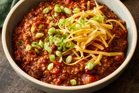

Chili Con Carne

Description
This chili con carne recipe is many years in the making, and I have won several awards with it. I think you'll be pleased with it. You can
alter it to your own spice levels to achieve your perfect chili. Garnish with shredded mozzarella cheese and use corn chips for dipping.
Ingredients
- 4 tablespoons vegetable oil
- 1 green bell pepper, chopped
- 1 yellow onion, chopped
- 2 ½ pounds lean ground beef
- ⅔ cup red wine
- 2 beef bouillon cubes
- 2 (16 ounce) cans whole peeled tomatoes, chopped, juice reserved
- 1 (12 ounce) can tomato paste
- 2 garlic cloves, crushed
- 2 tablespoons dried parsley
- 2 ½ teaspoons dried basil
- 2 ½ teaspoons chili powder
- 1 ½ teaspoons paprika
- 1 teaspoon cayenne pepper
- ½ teaspoon dried oregano
- 1 teaspoon salt
- ½ teaspoon black pepper
- 1 (15 ounce) can kidney beans, drained
- 12 drops hot pepper sauce (e.g. Tabasco)
- 3 tablespoons flour
- 3 tablespoons corn meal
- ½ cup water
Steps
- Heat oil in a large saucepan over medium heat. Add green pepper and onion; cook and stir until softened. Stir in ground beef and cook until browned.
Stir in wine and crumble over bouillon cubes; cook for a few minutes.
- Stir in chopped tomatoes, tomato paste, and garlic. Season with parsley, basil, chili powder, paprika, cayenne pepper, and oregano. Stir in salt and pepper.
- Bring to a boil over high heat. Reduce heat to medium-low; cover, and simmer for 90 minutes, stirring occasionally.
- Stir in kidney beans and hot pepper sauce. Add reserved tomato juice if more liquid is needed; continue to simmer for an additional 30 minutes.
- Whisk flour, cornmeal, and water together in a small bowl until smooth; stir into chili and simmer for a further 10 minutes, or until chili has thickened up.